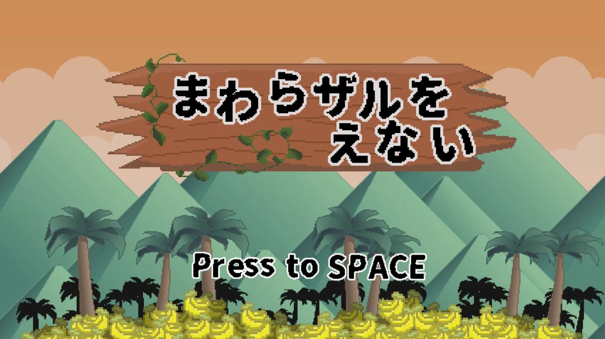
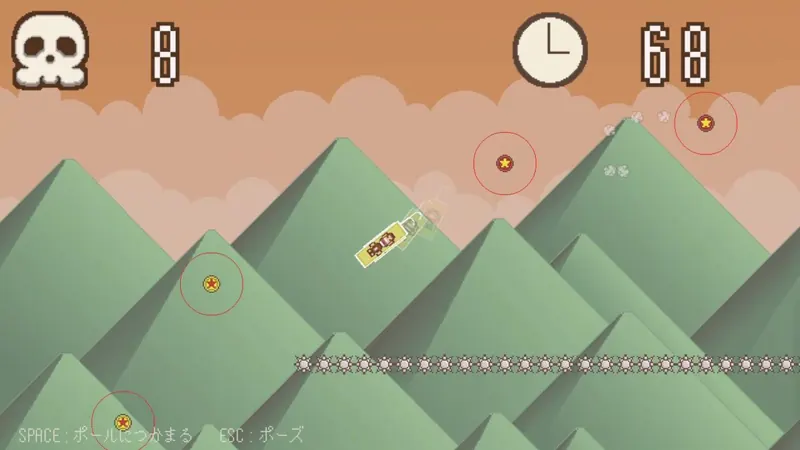
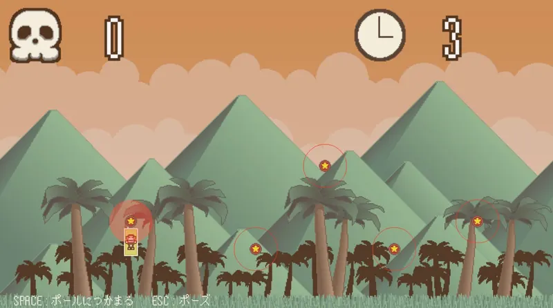

チーム作品紹介 / 1年生編



- 開発概要
- 開発環境学内製エンジン
- 開発人数3人
- 制作期間1ヶ月
作品紹介・こだわりポイント
回転するサルを操作し、タイミング良くポールをジャンプしながらゴールを目指すゲームです。
タイトルシーンがメインだったので、ゲームにおいて一番最初に見られる画面に動きを沢山付けて、目を引くような演出になるように制作しました。
TEAM WORK ─ 1年生編
チーム作品紹介 / 1年生編



回転するサルを操作し、タイミング良くポールをジャンプしながらゴールを目指すゲームです。
タイトルシーンがメインだったので、ゲームにおいて一番最初に見られる画面に動きを沢山付けて、目を引くような演出になるように制作しました。